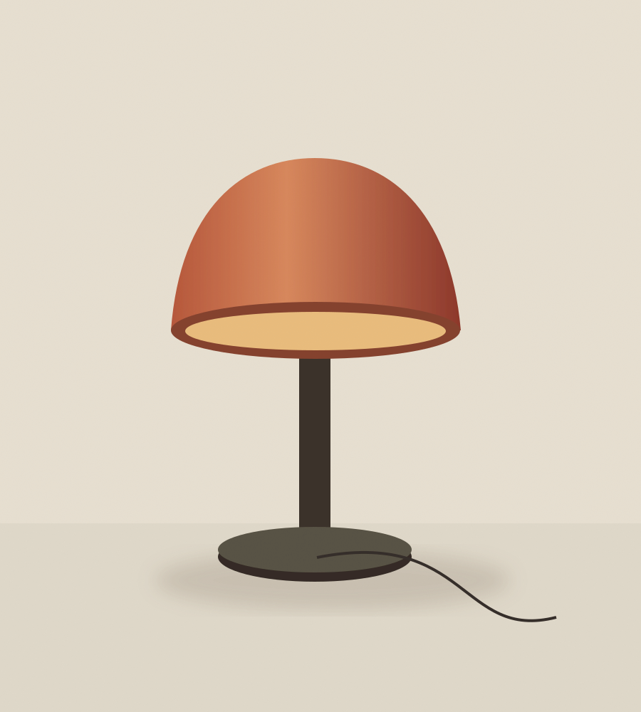
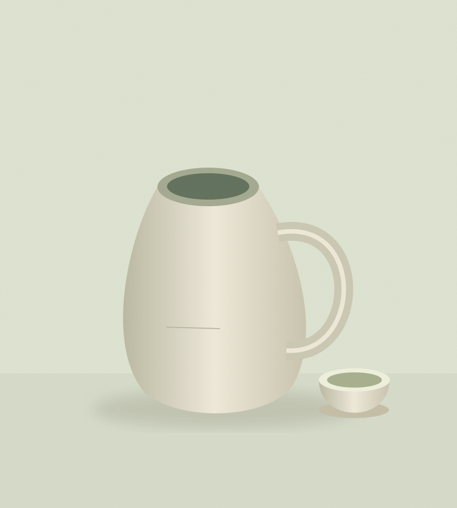
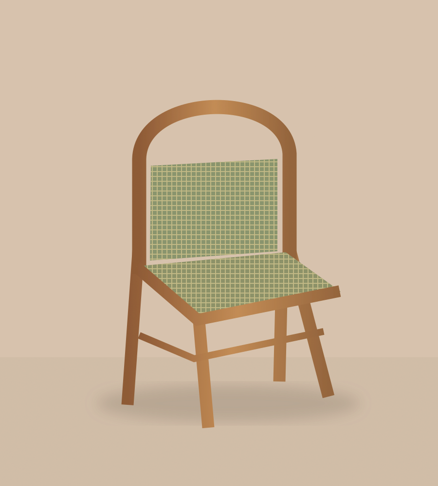

THE EVERYDAY COLLECTION / 01
温暖的光、自然的肌理、舒服的尺度。三件器物，为日常留一点简单的美。

柔和漫射光 / 可调灯头

手工施釉 / 一壶一杯

实木框架 / 编织坐面
正在展示 3 件器物
A NOTE ON MATERIALS
天然纹理与手工色差，是材料的一部分。认识它，也学习如何与它长久相处。
YOUR EVERYDAY COLLECTION
清单保存在当前浏览器中。这里不会下单或付款，展示价格不含配送费用。